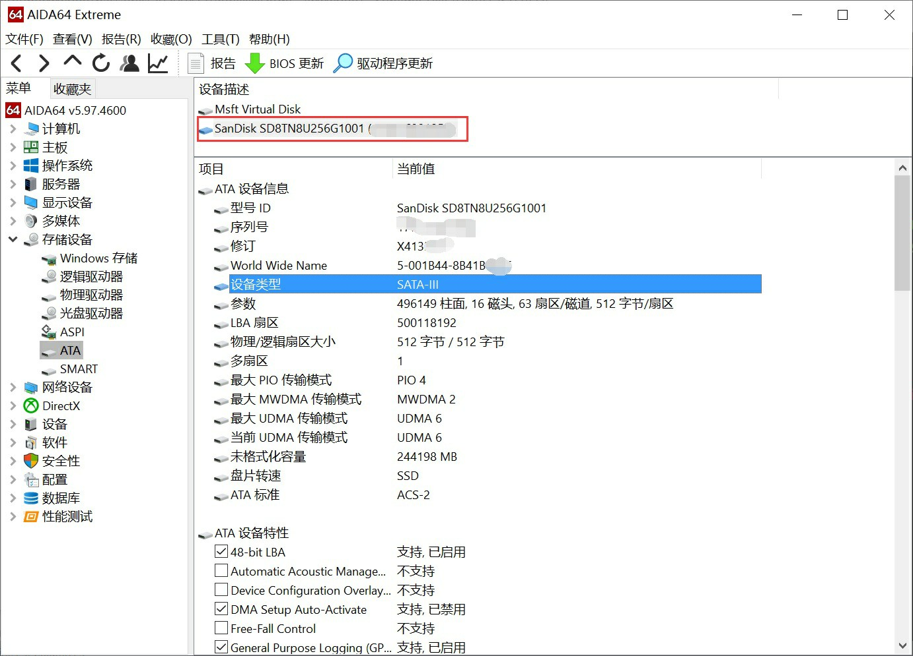
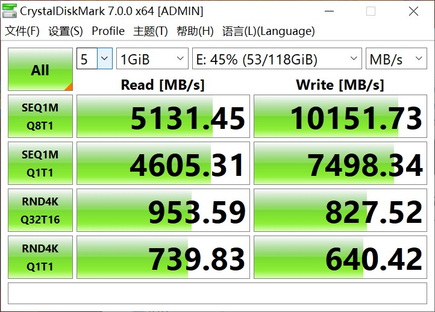
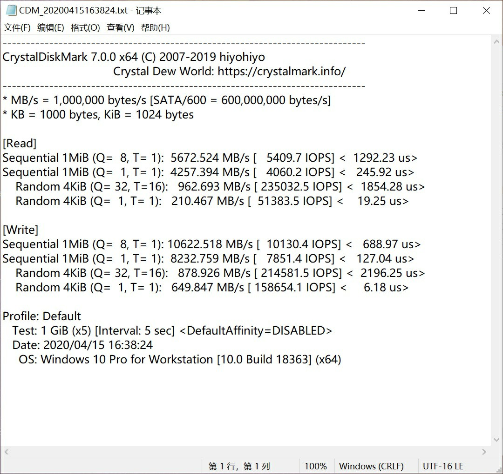
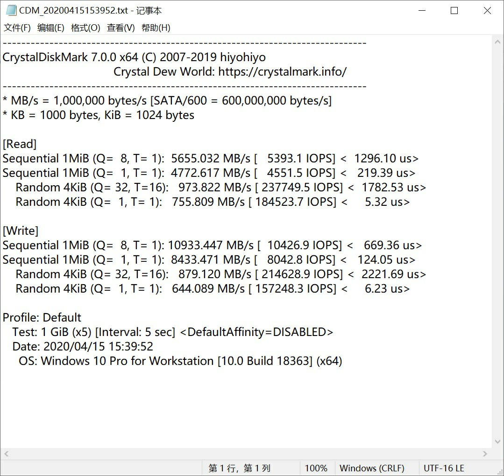

让你的机械变成固态！
Turn Your HDD TO SSD!
2020/04/17 13：08 分类：好东西
今天天气真不错，找到一个好东西。
叫PrimoCache，话不多说，直接上图:




这是一块SATA总线的M.2固态盘，写入直接给拉到了四块NVMe组RAID-0的速度（只要你不是传输什么特大文件的话) 原理是在内存划一个分区拿来做硬盘的DRAM。
由于手头上没有能读取1000M/s以上的所以就没有测试实际效果了。